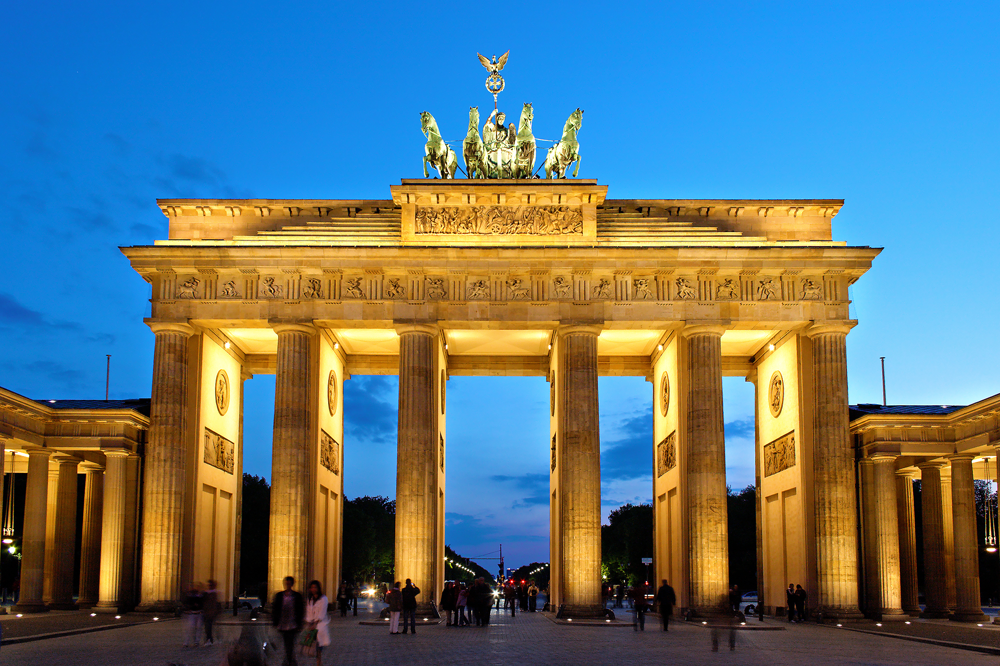
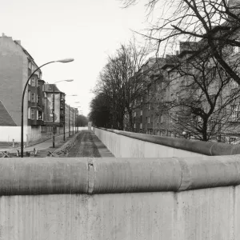

🏛️ Lugares turísticos
Puerta de Brandeburgo
La Puerta de Brandeburgo es uno de los monumentos más conocidos de Alemania y se encuentra en Berlín. Fue construida a finales del siglo XVIII y actualmente es uno de los principales símbolos de la ciudad y del país.

Castillo de Neuschwanstein
El Castillo de Neuschwanstein está ubicado en Baviera, cerca de los Alpes. Fue construido en el siglo XIX por el rey Luis II y es famoso por su arquitectura de estilo medieval y por sus paisajes. Es uno de los lugares más visitados de Alemania.

Muro de Berlín
El Muro de Berlín fue construido en 1961 para separar Berlín Oriental de Berlín Occidental. Durante casi 30 años representó la división de Alemania. Fue derribado en 1989 y actualmente algunos de sus restos son un importante lugar histórico.
